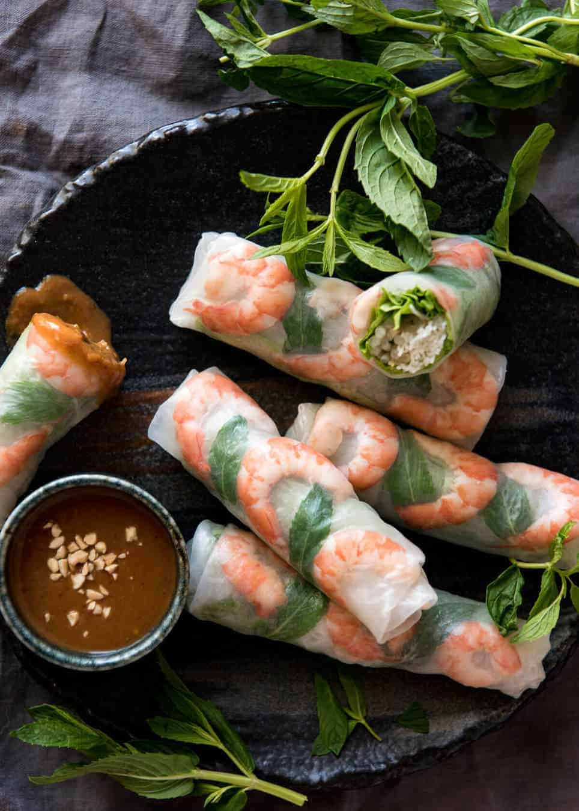

Rice Paper Roll

Description
Rice paper rolls are super thin wrappers traditionally made from rice, water and salt that can be filled with almost anything, that originated from Vietnam.
Ingredients
- sheets of round rice paper
- smalled cooked prawns, peeled
- dried vermicelli noodles
- lettuce leaves
- mint leaves
- bean sprouts
Ingredients for penut dipping sauce
- 1 tbsp peanut butter, preferably smooth
- 2 tbsp hoisin sauce
- 1 1/2 tbsp white vinegar (or lime juice)
- 1/3 cup milk (any fat%) (or water)
- 1 garlic clove, minced
- 1/2 tsp crushed chilli, samba oelak or other chilli paste, adjust to taste (optional)
Instructions